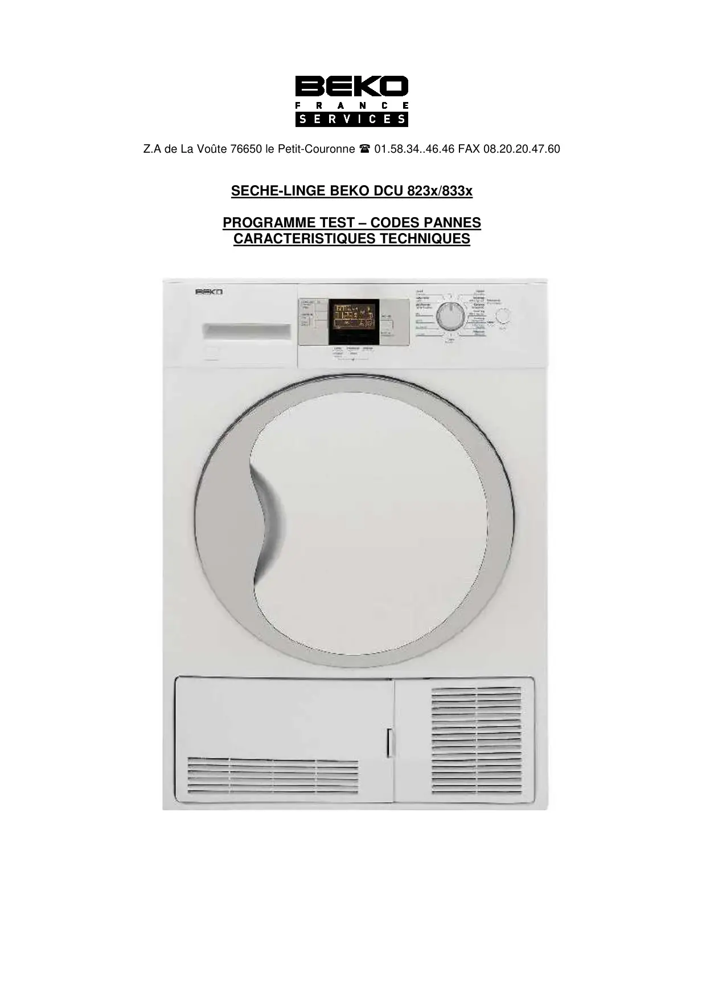
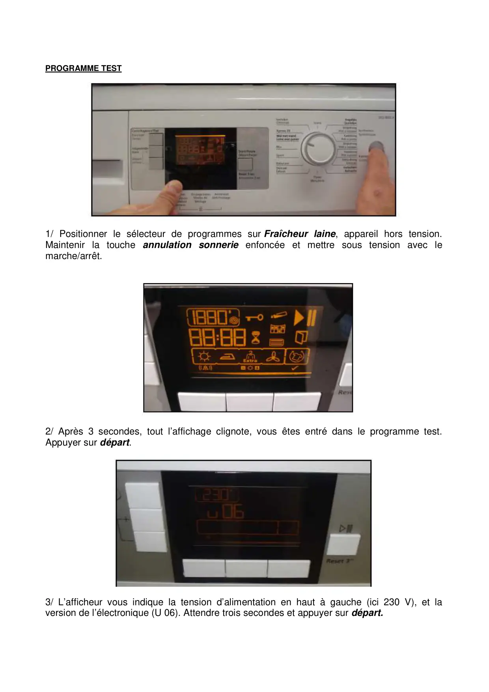
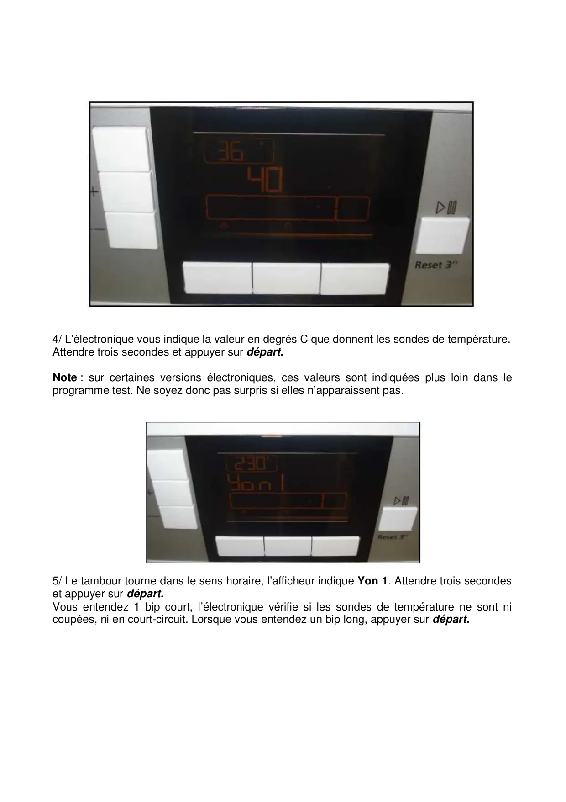
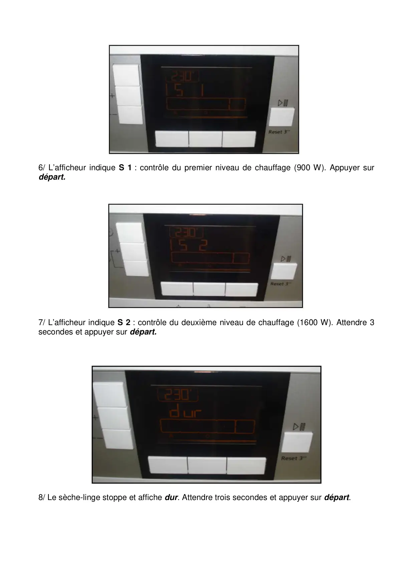
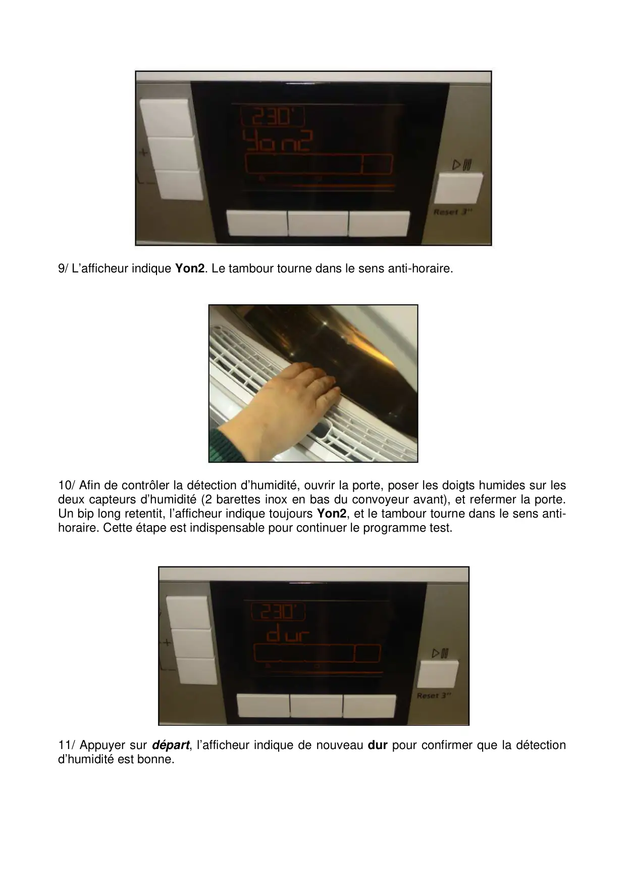
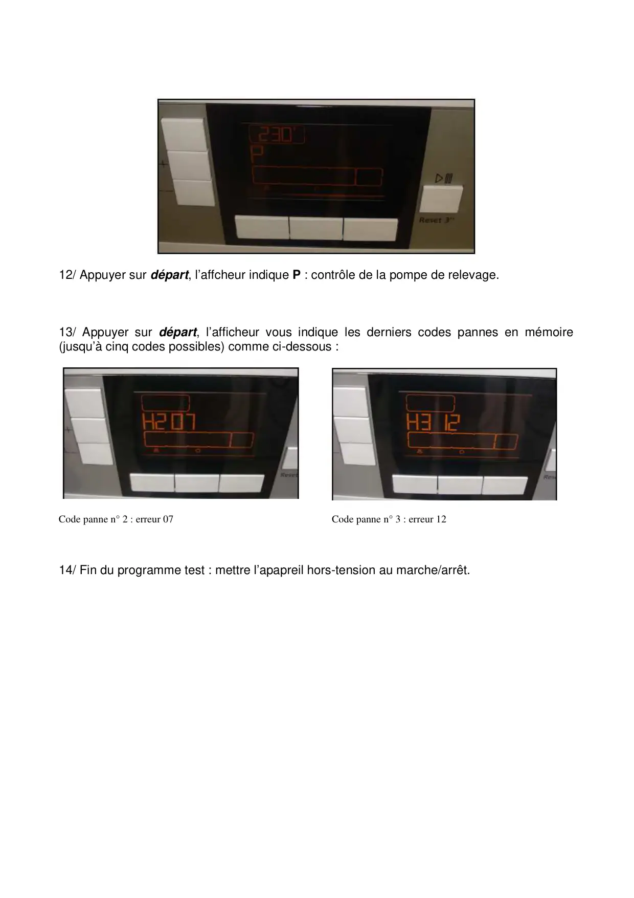
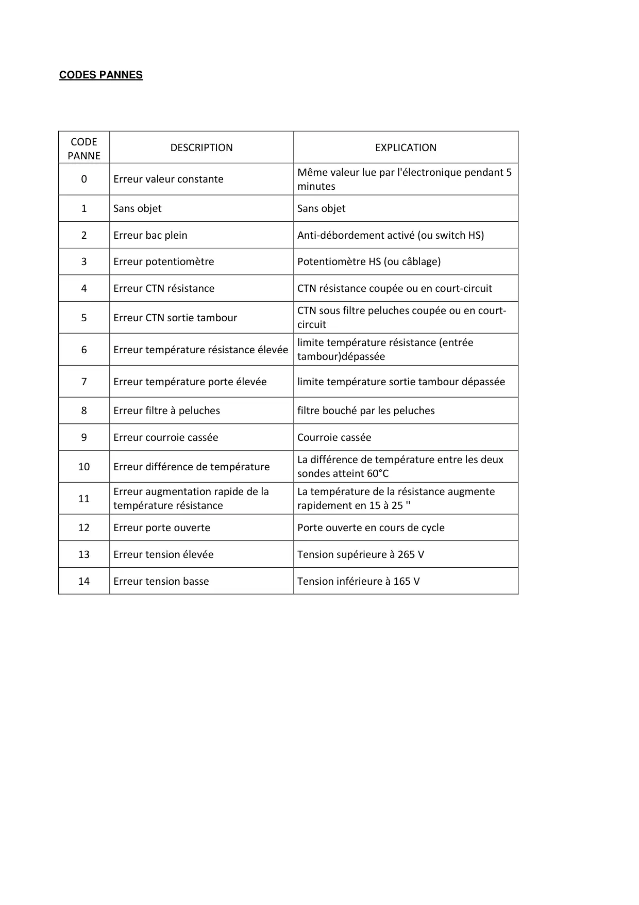
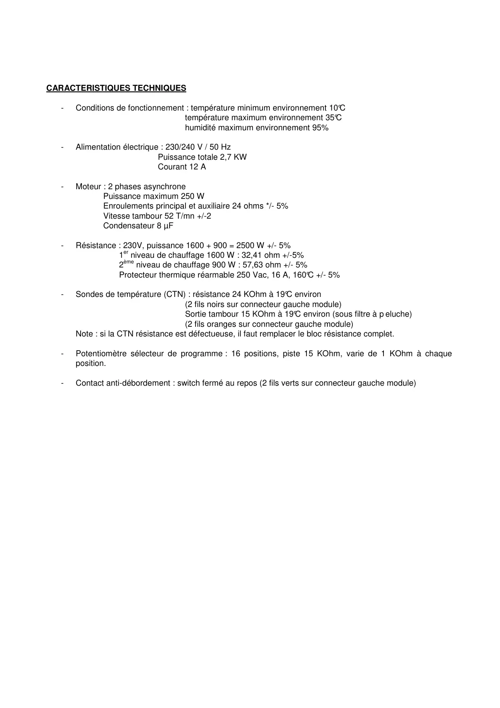

ProgrTest.seche linge LCD DCU833x 933x Fr

Z.A de La Voûte 76650 le Petit-Couronne 01.58.34..46.46 FAX 08.20.20.47.60SECHE-LINGE BEKO DCU 823x/833xPROGRAMME TEST – CODES PANNESCARACTERISTIQUES TECHNIQUES
1 / 8
PROGRAMME TEST1/ Positionner le sélecteur de programmes sur Fraîcheur laine, appareil hors tension.Maintenir la touche annulation sonnerie enfoncée et mettre sous tension avec lemarche/arrêt.2/ Après 3 secondes, tout l’affichage clignote, vous êtes entré dans le programme test.Appuyer sur départ.3/ L’afficheur vous indique la tension d’alimentation en haut à gauche (ici 230 V), et laversion de l’électronique (U 06). Attendre trois secondes et appuyer sur départ.
2 / 8
4/ L’électronique vous indique la valeur en degrés C que donnent les sondes de température.Attendre trois secondes et appuyer sur départ.Note : sur certaines versions électroniques, ces valeurs sont indiquées plus loin dans leprogramme test. Ne soyez donc pas surpris si elles n’apparaissent pas.5/ Le tambour tourne dans le sens horaire, l’afficheur indique Yon 1. Attendre trois secondeset appuyer sur départ.Vous entendez 1 bip court, l’électronique vérifie si les sondes de température ne sont nicoupées, ni en court-circuit. Lorsque vous entendez un bip long, appuyer sur départ.
3 / 8
6/ L’afficheur indique S 1 : contrôle du premier niveau de chauffage (900 W). Appuyer surdépart.7/ L’afficheur indique S 2 : contrôle du deuxième niveau de chauffage (1600 W). Attendre 3secondes et appuyer sur départ.8/ Le sèche-linge stoppe et affiche dur. Attendre trois secondes et appuyer sur départ.
4 / 8
9/ L’afficheur indique Yon2. Le tambour tourne dans le sens anti-horaire.10/ Afin de contrôler la détection d’humidité, ouvrir la porte, poser les doigts humides sur lesdeux capteurs d’humidité (2 barettes inox en bas du convoyeur avant), et refermer la porte.Un bip long retentit, l’afficheur indique toujours Yon2, et le tambour tourne dans le sens anti-horaire. Cette étape est indispensable pour continuer le programme test.11/ Appuyer sur départ, l’afficheur indique de nouveau dur pour confirmer que la détectiond’humidité est bonne.
5 / 8
12/ Appuyer sur départ, l’affcheur indique P : contrôle de la pompe de relevage.13/ Appuyer sur départ, l’afficheur vous indique les derniers codes pannes en mémoire(jusqu’à cinq codes possibles) comme ci-dessous :Code panne n° 2 : erreur 07 Code panne n° 3 : erreur 1214/ Fin du programme test : mettre l’apapreil hors-tension au marche/arrêt.
6 / 8
CODES PANNESCODEPANNEDESCRIPTIONEXPLICATION0Erreur valeur constanteMême valeur lue par l'électronique pendant 5minutes1Sans objetSans objet2Erreur bac pleinAnti-débordement activé (ou switch HS)3Erreur potentiomètrePotentiomètre HS (ou câblage)4Erreur CTN résistanceCTN résistance coupée ou en court-circuit5Erreur CTN sortie tambourCTN sous filtre peluches coupée ou en court-circuit6Erreur température résistance élevée limite température résistance (entréetambour)dépassée7Erreur température porte élevéelimite température sortie tambour dépassée8Erreur filtre à peluchesfiltre bouché par les peluches9Erreur courroie casséeCourroie cassée10Erreur différence de températureLa différence de température entre les deuxsondes atteint 60°C11Erreur augmentation rapide de latempérature résistanceLa température de la résistance augmenterapidement en 15 à 25 ''12Erreur porte ouvertePorte ouverte en cours de cycle13Erreur tension élevéeTension supérieure à 265 V14Erreur tension basseTension inférieure à 165 V
7 / 8
CARACTERISTIQUES TECHNIQUES-Conditions de fonctionnement : température minimum environnement 10°Ctempérature maximum environnement 35°Chumidité maximum environnement 95%-Alimentation électrique : 230/240 V / 50 HzPuissance totale 2,7 KWCourant 12 A-Moteur : 2 phases asynchronePuissance maximum 250 WEnroulements principal et auxiliaire 24 ohms */- 5%Vitesse tambour 52 T/mn +/-2Condensateur 8 µF-Résistance : 230V, puissance 1600 + 900 = 2500 W +/- 5%1er niveau de chauffage 1600 W : 32,41 ohm +/-5%2ème niveau de chauffage 900 W : 57,63 ohm +/- 5%Protecteur thermique réarmable 250 Vac, 16 A, 160°C +/- 5%-Sondes de température (CTN) : résistance 24 KOhm à 19°C environ(2 fils noirs sur connecteur gauche module)Sortie tambour 15 KOhm à 19°C environ (sous filtre à p eluche)(2 fils oranges sur connecteur gauche module)Note : si la CTN résistance est défectueuse, il faut remplacer le bloc résistance complet.-Potentiomètre sélecteur de programme : 16 positions, piste 15 KOhm, varie de 1 KOhm à chaqueposition.-Contact anti-débordement : switch fermé au repos (2 fils verts sur connecteur gauche module)
8 / 8